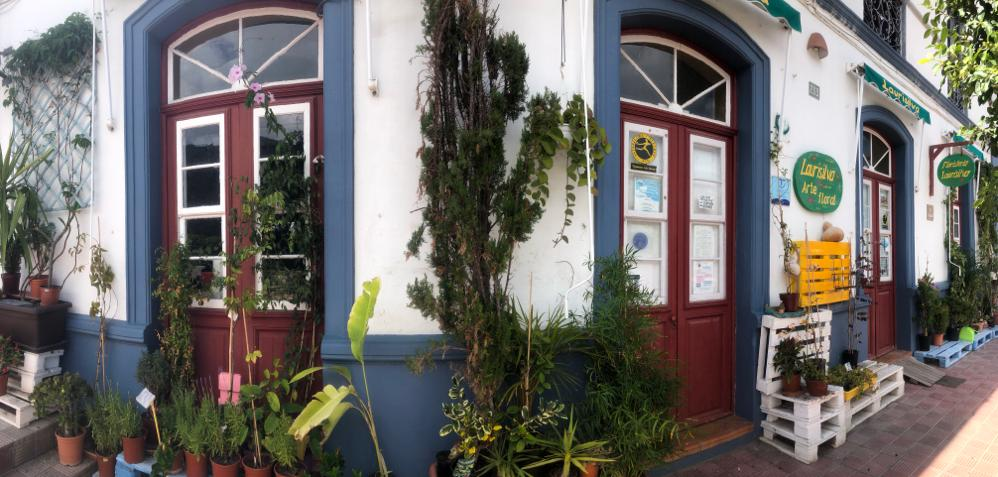

Floristeria Laurisilva
En Hermigua, en esta hermosa isla de La Gomera, reserva de los mejores bosques de laurisilva que podemos encontrar... estamos desde 1996.
LLevamos 24 años repartiendo cariño y amabilidad con nuestras flores. Si necesitas información o tienes cualquier duda llámanos por teléfono o déjanos tu correo... y si puedes ven a visitarnos
En nuestra floristería te proporcionamos una amplia variedad de productos florales, plantas, bonitos detalles... y sobre todo el trato amable y personalizado con que en esta pequeña isla acostumbramos tratar a nuestros amigos.